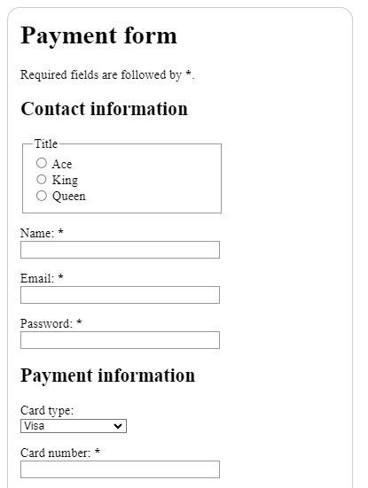
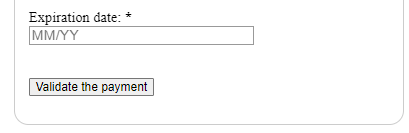
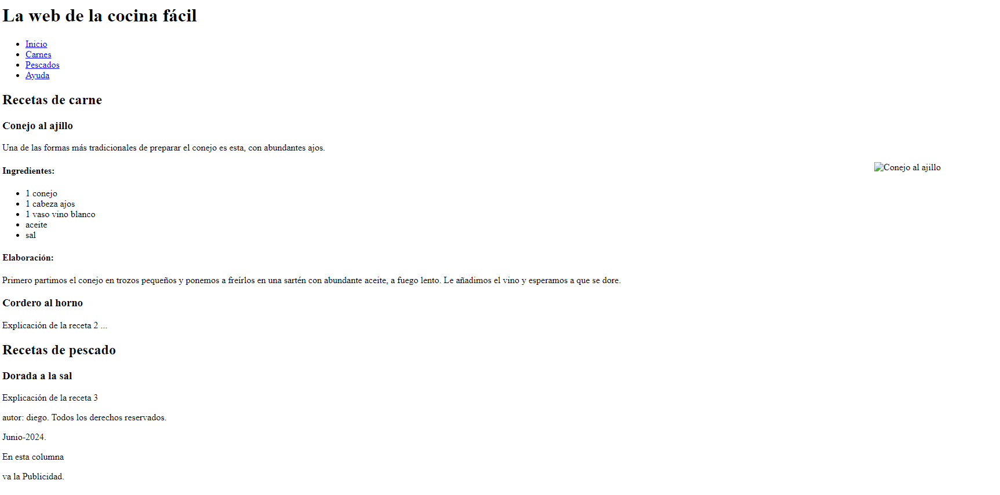
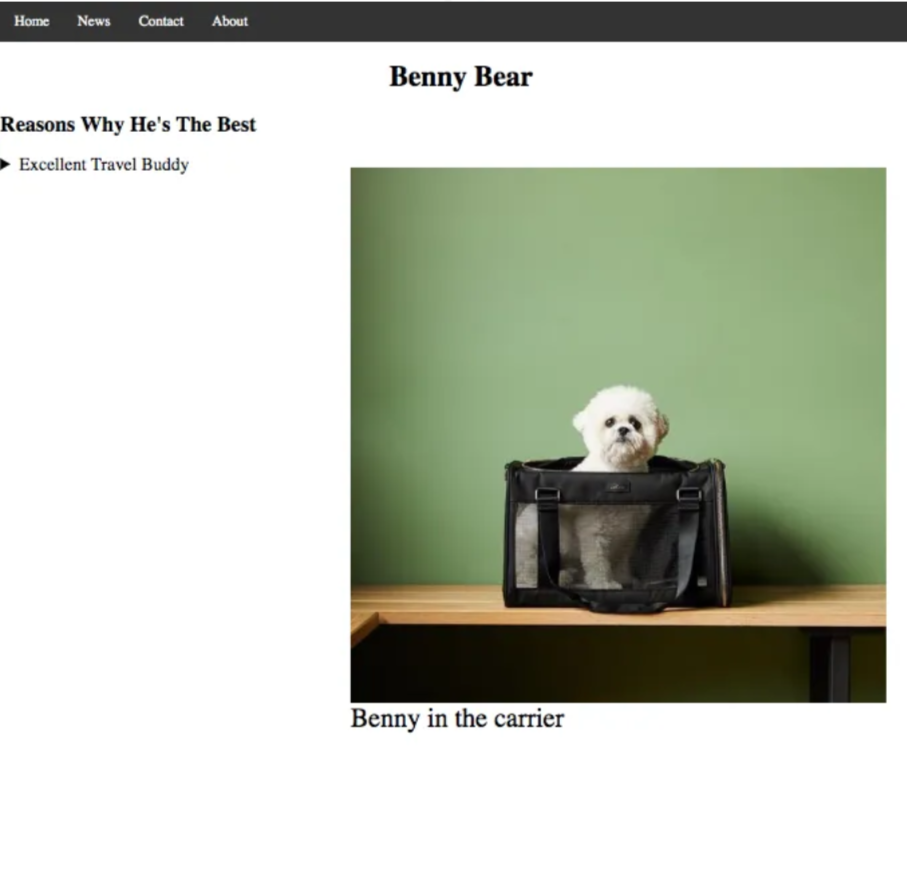
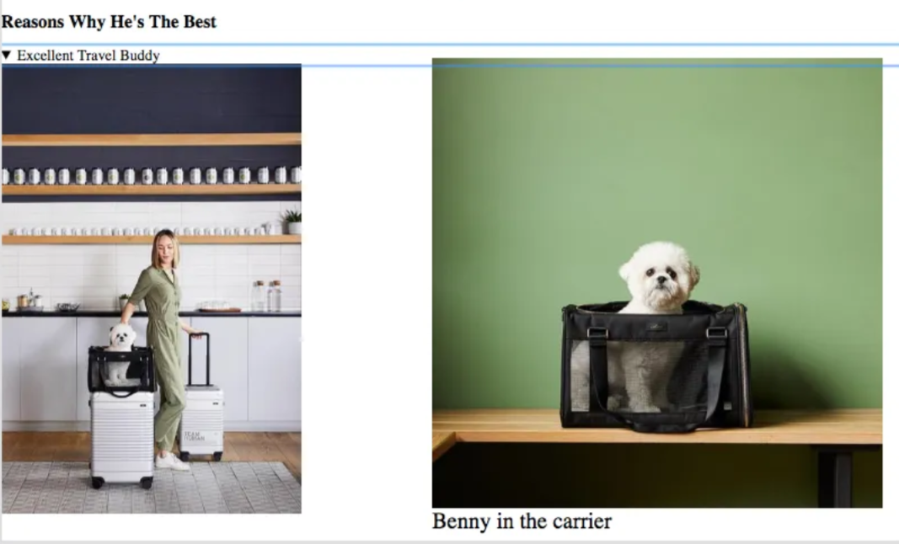
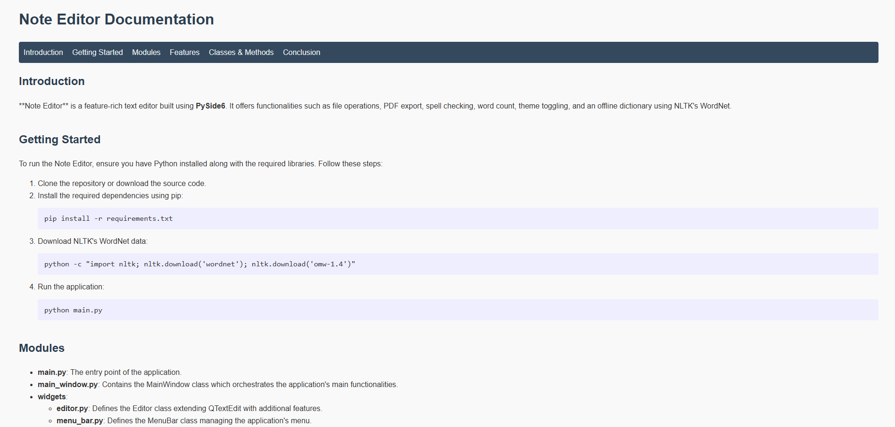
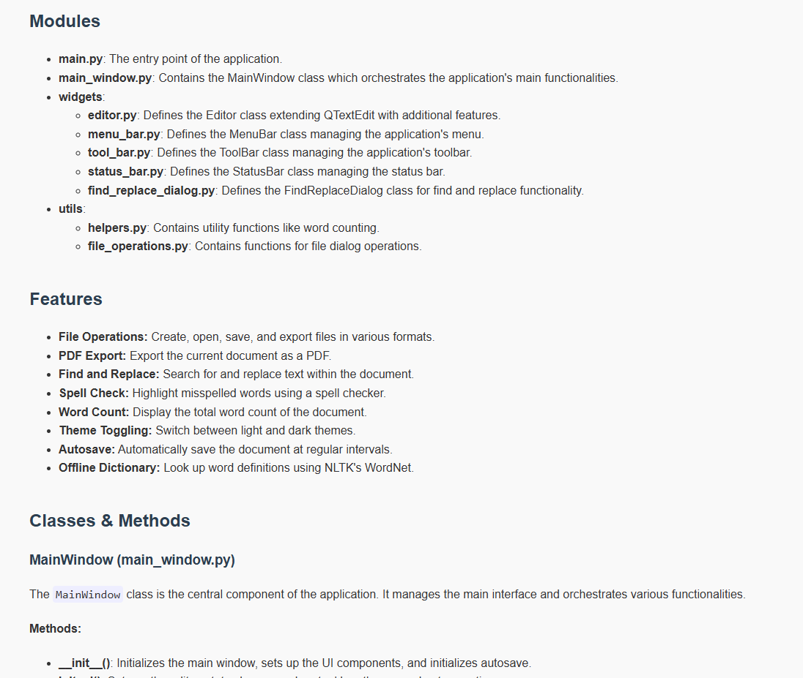
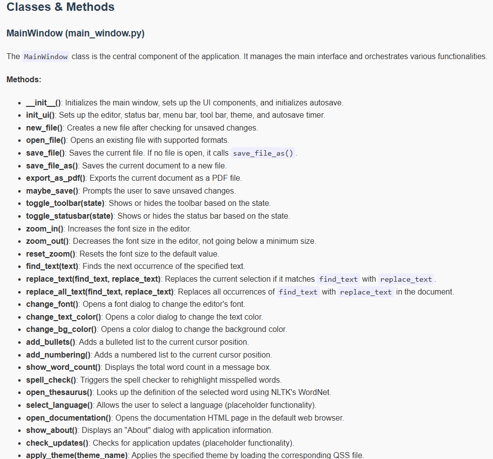
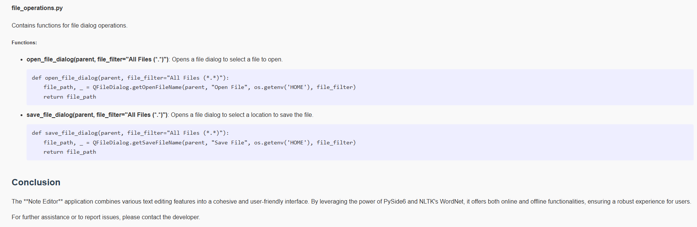

LM 1DAW · Tarea
HTML 17..24
Instrucciones
Resuelve los ejercicios de formularios, estructura semántica y contenido multimedia. Las dos actividades numeradas como 24 en las diapositivas se distinguen por su tema.
Ejercicio 17
Formulario de pago
Reproduce en HTML el formulario Payment form de las capturas.
- Sección Contact information: grupo de opciones Ace, King y Queen; nombre, correo electrónico y contraseña.
- Sección Payment information: selector de tipo de tarjeta, número de tarjeta y fecha de caducidad con la indicación
MM/YY. - Identifica los campos obligatorios que aparecen marcados con un asterisco.
- Incluye las etiquetas de los campos y el botón Validate the payment.


Ejercicio 18
La web de la cocina fácil
Representa en HTML el contenido de la página de cocina de la captura.
- Título y menú con Inicio, Carnes, Pescados y Ayuda.
- Apartado de recetas de carne, con Conejo al ajillo y Cordero al horno.
- Ingredientes, elaboración e imagen de la receta de conejo.
- Apartado de recetas de pescado, con Dorada a la sal.
- Información del autor, fecha y espacio de publicidad.
Organiza la información con una estructura coherente de encabezados y secciones.

Ejercicio 19
Contenido desplegable y figuras
Reproduce la estructura HTML de la página Benny Bear, siguiendo sus dos estados de referencia.
- Navegación con Home, News, Contact y About.
- Título Benny Bear y apartado Reasons Why He’s The Best.
- Bloque desplegable Excellent Travel Buddy.
- Imágenes y pie de imagen Benny in the carrier.


Ejercicio 20
Preguntas frecuentes desplegables
Reproduce las preguntas frecuentes de la captura utilizando etiquetas semánticas. Usa <details> para desplegar y contraer la información de cada pregunta.

Ejercicio 21
Corregir la estructura semántica
Reorganiza correctamente el siguiente HTML. Explica el motivo de cada error que encuentres y la solución que propones.
Código que debes revisar
<section>
<aside>
<div>
<section>
<header>
<a href="/">
<img src="logo.svg" alt="Logo">
</a>
</header>
<main>
<a href="/services">Services</a>
<a href="/products">Products</a>
<a href="/aboutus">AboutUs</a>
</main>
<footer></footer>
</section>
</div>
</aside>
<section>
<footer></footer>
<main>
<h1>Welcome to Hell</h1>
</main>
<footer></footer>
</section>
</section>Ejercicio 22
Página de documentación
Genera únicamente el HTML de una página de documentación siguiendo la estructura del ejemplo Note Editor Documentation de Zakaria.
- Conserva la navegación entre Introduction, Getting Started, Modules, Features, Classes & Methods y Conclusion.
- Estructura los títulos, párrafos, listas y fragmentos de código mostrados en las referencias.




Ejercicio 23
Reproductor de vídeo HTML5
Crea una página con un reproductor de vídeo e investiga los atributos de <video> en la documentación de MDN.
- Ofrece el vídeo en dos formatos, MP4 y WebM, mediante elementos
<source>. - Añade una imagen
posterque se vea antes de comenzar la reproducción. - Configura la reproducción automática, sin sonido y en bucle.
- Muestra los controles de reproducción.
- Establece una anchura de 600 píxeles y una altura de 400 píxeles.
- Incluye un mensaje de respaldo dentro de
<video>para los navegadores que no lo soporten, con un enlace directo que permita descargar el vídeo.
Ejercicio 24
Reproductor de audio HTML5
Crea una página con un reproductor <audio> e investiga sus atributos en la documentación oficial.
- Ofrece el audio en dos formatos: MP3 y OGG.
- Configura la reproducción automática, inicialmente silenciada y en bucle.
- Muestra los controles de reproducción.
- Utiliza
preloadpara que el audio se cargue cuando sea necesario. - Incluye un mensaje de respaldo para los navegadores que no soporten el elemento, con un enlace directo de descarga del audio.
Ejercicio 24
Incrustar PDF, vídeo y mapa
Crea un documento HTML con los siguientes contenidos incrustados:
- Un PDF llamado
doc.pdf, situado en la carpetamedia. Utiliza<object>y configura un área de 600 × 400 píxeles. Añade dentro del elemento un mensaje de respaldo con un enlace directo al PDF. - Un vídeo de YouTube y un mapa de Google Maps. Obtén sus códigos de incrustación e incorpóralos mediante
<iframe>, con un tamaño de 560 × 315 píxeles. - Investiga cómo permitir la visualización a pantalla completa y cómo restringir la ejecución de JavaScript y el envío de formularios. Aplica las restricciones del ejercicio a los marcos y comprueba su efecto.
Entrega
Adjunta los archivos HTML y sus recursos. Incluye en el ejercicio 21 la explicación de los errores y las correcciones propuestas.
Materiales de la tarea
No hay archivos adjuntos en esta tarea.